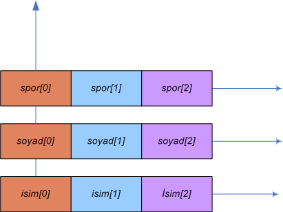

JavaScript Temelleri
Bölüm 8
Array (Dizi) Nesne Sınıfı
Bölüm 8 Sayfa 5
8.3 - Dizi Sınıfı Nesne Örneklerinin Özellikleri
Dizi sınıfı nesne örneklerine kısaca diziler adı verilir. Diziler programlama dilleri için çok önemlidir, çünkü büyük sayıda uyumlu (coherent) verinin döngüler yardımı ile işlenmesine olanak sağlar. JavaScript programlama dili için, dizilerin özel önemi vardır, çünkü, web sayfalarındaki elemanlar nesne dizileri şeklinde oluşturulmuş olduğundan, web sayfalarında JavaScript programlama yöntemlerinin uygulanabilmesi için, dizi elemanlarına erişim yöntemlerinin iyi özümsenmiş olmaları gerekir.
Bir nesne örneğinin dizi olabilmesi için, gerekli ve yeterli şart, nesne örneğinin bazı özelliklerinin adlarının tamsayı olmasıdır. Bu tamsayılara eleman indisleri adı verilir. Bazı özelliklerinin adları tamsayı olmayan hiçbir nesne örneği dizi sınıfından değildir. İlişkisel dizi olarak adlandırılan özellik adları sözel olan nesne örnekleri, dizi sınıfından değil generik nesne sınıfındandır.
Diziler sadece dizi yapılandırıcısı ile (a = new Array()) şeklinde veya, dizi başlatıcısı ile (a = [];) şeklinde oluşturulabilirler. Oluşturuluş bir dizinin bellek referansının başka bir değişkene atanması yeni bir dizi oluşturmaz, var olan diziye iki farklı değişken ile erişilebilmesini sağlar.
Dizilere kullanıcılar tarafından sözel isimli özellikler eklenebilir. Bu kullanıcı tanımlı özellikler, dizi elemanı değil dizilerin kendilerine özgü özellikleridir. Dizilere eklenen kullanıcı tanımlı özellikler eklenmenin yapılmış olduğu diziye özgüdür, başka dizilerde tanımlı değildir.
Bir a dizisinin elemanlarına a[0] veya a['0'] olarak erişilebilir, fakat a.0 olarak erişilemez.
Bir a dizisinin kullanıcı tanımlı yetkili özelliğine a['Yetkili'] veya a.Yetkili şeklinde erişilebilir.
Dizi nesne örneklerinin (dizilerin) kendilerine özgü prototipleri yoktur. Diziler, dizi sınıfının prototipini paylaşırlar. JavaScript yorumlayıcısı, dizilere kullanıcı eliyle yapılan özellik katkılarının bir envanterini tutar ve bu özelliklere dizilere erişilebilen kapsamlardan erişim sağlar.
Dizilerin sadece length (uzunluk) özellikleri vardır.
8.3.1 - Dizi Sınıfı Nesne Örneklerinin length Özelliği
Dizilerin length özelliğinin değeri, ismi dizi indisi olan özelliklerin en büyüğünün değerinden sayıca bir fazlasıdır. Eğer dizi aşağıdaki örnekte görüldüğü gibi, bitişik-sürekli bir dizi ise, yani elemanlarının indisleri sıfırdan başlayarak, birer artacak şekilde dizi sonuna kadar gelişiyorsa, uzunluk özelliğinin döndürdüğü değer, aynı zamanda dizi içindeki eleman sayısına da eşit olur. Aşağıda JavaScript kodları verilmiş olan uygulama, bu konuda bir örnek vermektedir:
function diziVerileri() { var d = new Array (); d[0] = 'Selin'; d[1] = 'Buket'; d[2] = 'Müge'; d[3] = 'Aylin'; diziElemanlarıDikeyYazımı(d, 'b8.3.1-uyg-1-sonuç-1'); diziUzunluğu(d, 'b8.3.1-uyg-1-sonuç-2'); }
Bu Programın Sonuçları :
Bu programda dizi elemanlarının alt alta görüntülenmesini sağlayan diziElemanlarıDikeyYazımı() fonksiyonun iki argümanı bulunmaktadır. Bunlardan ilki dizi değişkeni, ikincisi, görüntülenmenin yapılacağı sayfa elemanının id değeridir. Bu fonksiyonu şimdilik sadece kullanmakla yetineceğiz. Bu fonksiyon, bdelib.js program kitaplığına konulmuştur. Bu fonksiyonun yazılımı aşağıda görülmektedir:
function diziElemanlarıDikeyYazımı(dizi, öncekiElementId) { var öncekiElement = document.getElementById(öncekiElementId), yeniParagraf = document.createElement('p'); yeniParagraf.setAttribute('class', 'cursive-blue'); inserAfter(yeniParagraf, öncekiElement); yeniParagraf.appendChild(document.createElement('br')); for (var i = 0; i < dizi . length; i++ ) { if (dizi [i] == undefined) { dizi[i] = 'undefined'; } bağlantıNoktası.appendChild(document.createElement('br')); bağlantıNoktası.appendChild(document.createTextNode(dizi[i])); } }
Diziler, her zaman bitişik-sürekli olarak tanımlanmak zorunda değildir. Aşağıdaki örnekte görülen e dizisi yani dizi sınıfı örneği, böyle bir diziyi belirtmektedir. Bu durumda, dizininin uzunluk özelliğinin döndürdüğü sayı, tanımlı eleman sayısına eşit değildir. Bu değer, ancak tanımlanan dizi, bir bitişik- sürekli dizi olsa ve dizi indisi orijinden (JavaScript programlama dili için orijin = 0 dır) başlasa, eleman sayısına eşit olur. Bunun dışındaki durumlar için, Pratik olarak dizideki en büyük indis n ise, dizi uzunluğu özelliği daima n+1 değerini döndürecektir. Aşağıda JavaScript kodları verilmiş olan uygulama, bu durumu açıklamaktadır.
function diziVerileri1(){ var e = new Array (); e[5] = 12; diziUzunluğu(e, 'b8.3.1-uyg-2-sonuç-1'); diziTabloTekBoyut('b8.3.1-uyg-2-sonuç-2', 'e Dizisi Elemanları', 'e', e); }
Bu Programın Sonuçları :
8.4 - Array() Fonksiyonu
Array() fonksiyonu, yapılandırıcı olarak değil de serbest fonksion olarak da kullanılırsa, yine bir dizi nesne sınıfı örneğinin yaratılmasını sağlar. Kullanımı,
diziSınıfıNesneÖrneği = Array([birim1[, birim2[, ...]]]);
şeklindedir. Bu çağrının aynı new Array(); çağrısınının etkisini yapacağı belirtilmiştir.
Bu tip bir çağrı, Yeni dizi sınıf örneklerinin yaratılması için, üçüncü ve yeni bir yöntemi oluşturmaktadır. Bu yöntemin, alışılmamış bir yöntem olacağını, fakat istendiğinde uygulanmasında bir sakınca olmayacağı düşünülebilir.
8.5 - Özel Dizi Teknikleri
8.5.1 - Paralel Diziler- Veri Yapıları
Bazı durumda veriler birbirleri ile ilişkilidir. Örnek olarak bir klüp üyesinin üye sıra numarası, adı, soyadı, takma adı, yaptığı spor türü, aldığı ödüller aynı kişi ile ilişkili bilgilerdir. Bu bilgiler basit olarak tek bir dizide tutulamaz, çünkü bir dizi elemanına basit olarak tek bir bilgi yerleştirilebilir. Bu durumda yanı kişi ile bilgileri birden çok diziye yerleştirmek gerekecektir. Kulüp üyelerinin tümünün bilgileri birbiri ile aynı olarak organize edilirse, her dizi elemanı, bir üyenin benzer bilgilerini saklar. Örnek olarak her üye numarası sütununa, isim dizisinden bir isim, spor dizisinden bir spor dalı karşı gelir. Bu tip dizi guruplarına paralel diziler adı verilir. Paralel dizilerin kullanılması ile birbirleri ile ilişkili onlarca özellik birlikle işlenebilir. Örnek:
/* <![CDATA[ */ // Bu Program bdelib.js Kitaplık Programından Yararlanmaktadır. function paralelDiziler() { var numara = [1, 2, 3], isim = ['Hasan', 'Theodor', 'Nigar']; soyad = ['Çörekçi', 'Özkasap', 'Hoşer'], spor = ['Yüzme', 'Tenis', 'Dağcılık'], bilgiAlanı = document.getElementById('TabloBaşı'), yeniSatır = new Object(), yeniSütun = new Object(); for (var i = 0; i < numara.length; i++) { yeniSatır = document.createElement('tr'); yeniSütun = document.createElement('td'); yeniSütun.appendChild(document.createtextNode(numara[i])); yeniSatır.appendChild(yeniSütun); yeniSütun = document.createElement('td'); yeniSütun.appendChild(document.createtextNode(isim[i])); yeniSatır.appendChild(yeniSütun); yeniSütun = document.createElement('td'); yeniSütun.appendChild(document.createtextNode(soyad[i])); yeniSatır.appendChild(yeniSütun); yeniSütun = document.createElement('td'); yeniSütun.appendChild(document.createtextNode(spor[i])); yeniSatır.appendChild(yeniSütun); bilgiAlanı.appendChild(yeniSatır); } } sayfaYüklendiktenSonraÇalıştır(paralelDiziler); /* ]]> */
Program Sonucu :
| Nr | Ad | Soyad | Spor Dalı |
|---|
Yukarıdaki uygulamada görüldüğü gibi, paralel diziler, ayrı isimli ayrı dizilerdir. Fakat, her dizinin absis ekseninde eşit sayıda ilerleme ile erişilen aynı dizi indisi ile erişilebilen her eleman, aynı bilginin farklı özellklerini belirtir. Paralel dizilerin verileri saklama şekli, aşağıdaki şemada görülebilir :

Paralel Diziler
Yukarıdaki şekilde görüldüğü gibi, paralel Dizileri, orijinleri aynı ortogonal eksene dayanan, paralel absis eksenleri olarak düşünebiliriz. Her absis ekseni, elemanların yerleştiği ayrı bir diziyi belirtir. Aynı üye oluşumu ile ilgili veriler, her dizinin absisinin aynı indisinde bulunur. Örnek olarak, soyad[2] üçüncü üyenin soyadı özelliği, spor[2], üçüncü üyenin spor seçeneğidir.
Paralel diziler, verilerin işlenmesi için çok ekonomik bir alternatif olabilirler. Doğal olarak bazı limitasyonları bulunabilir, fakat, az bir programlama bilgisi ile hiçbir ücretli programa gerek duyulmadan her türlü bilginin bilgisayar ortamında işlenebileceği basit yapılanmalar olarak öne çıkarlar.
Paralel dizilerde saklanacak verilerin daha iyi anlaşılması için, öncelikle veri terminoljisini bilmememiz gerekir. Bir veri sonlu bir bilgidir. Örnek olarak yukarıdaki uygulamada paralel dizilere yerleştirilen üye bilgileri bir veri olarak nitelendirilir.
Her verinin bir yapısı vardır. Bir verinin yapısı, bu veride bulunacak alt veri parçalarını içerir. Veri yapısında bulunacak alt veri parçalarına veri alanı adı verilir. Yukarıdaki uygulamada, üye veri yapısının, numara, isim, soyad, spor şeklinde dört veri alanı bulunmaktadır.
Veri yapılarındaki veri alanlarının belirli bir veri tipi vardır. JavaScript programlama dilinde veri alanları sayısal, sözel veya nesne tipinde olabilirler. Bu olanaklar veri yapılarına olağanüstü bir esneklik ve genişleme yeteneği sağlar.
Bir veri yapısı belirgin ve değişmezdir. Bu veri yapısında sonsuz sayıda veri üretilebilir. Veriye bir örnek veya kayıt adı verilir.
JavaScript programlama dilinde veri yapılarına öntanımlı veya kullanıcı tanımlı nesne yapıları karşı gelir. Nesne yapılarına, nesne sınıfı, sınıf nesnesi veya nesne ailesi adları da verilmektedir. Tanımlamış olan her nesne sınıfının bir prototip görevini yapar. Bu prototipe uygun nesne örnekleri üretilir.
Veri yapıları sadece bir yönergedir. Bu yönerge, olan veri yapısını belirtir. Örnek olarak, kullanıcı tanımlı bir üye nesne sınfının yapısı, bu nesne sınıfı dört veri alanından oluşacaktır. Birinci veri alanının adı numara, veri tipi sayısal, ikinci veri alanının adı isim, veri tipi sözel... şeklinde bir bildirimdir. Öntanımlı nesne sınıflarının (Math sınıfı gibi) veri yapıları JavaScript yorumlayıcısı tarafından önceden tanımlanmıştır. Kullanıcı tanımlı veri yapıları, bir sonraki bölümde göreceğimiz, yapılandırıcı fonksiyonlarla bildirilirler.
Veri yapılarına uygun olarak oluşturulan kayıtlar, nesne sınıf örnekleridir. Bunlara kısaca nesne örnekleri adı verilir ve bunlar gerçek, nesnel, fiziksel büyüklüklerdir. Nesne örneklerinin yapısı, nesne sınıfı tarafından kesin olarak belirtilmiştir. Bu yönergeye bağlı olarak istendiği kadar fiziksel sınıf örneği oluşturulabilir.
Nesne literalleri ise, gerçek nesne örnekleridir ama sınıf yapıları önceden belirtilmemiştir. JavaScript yorumlayıcısı nesne literallerinin yapısını dinamik olarak atama sırasında algılar. Birbiri ile aynı yapıda farklı nesne literalleri, belirtilmemiş bir sanal sınıfın örnekleri gibi düşünülebilirler.
Paralel dizilere yerleştirilmiş bilgiler ise, belirtilmemiş bir sanal sınıfın, belirtilmememiş bir sanal örneğinin, çesitli dizilerin aynı düşey koordinatlarına yerleştirilmiş özellik değerleri olarak düşünülebilir. Örnek olarak, yukarıdaki uygulamada paralel dizilere yerleştirilen üye bilgileri, deklare edilmemiş bir nesne literalinin
a = {numara : 1, isim : 'Hasan', soyad : 'Çörekçi', spor : 'Tenis'};
özellik değerleri olan 1, 'Hasan', 'Çörekçi', 'Tenis' değerleri, dört paralel dizinin ilk elemanları olarak yerleştirilmiştir. Programcılar, bu bilgilere, yukarıdaki uygulamada olduğu gibi, yerleştirdikleri sistematikle erişebilirler.
Paralel dizilerin, verilerin çalışılması için çok kırılgan bir sistem olduğu bilinmelidir. Paralel dizilerde, aynı birime ait bilgiler birbirinden bağımsız dizilere yerleştirilmiştir. Bu dizilerin birinde eleman kayması olursa tüm sistemin bilgileri kaybolacaktır. Paralel diziler yerine, veri sistemine dayalı, kullanıcı tipli nesne sınıflarının yaratılması ve kullanılması çağdaş bir düşünce olacaktır.
Kullanıcı tipii bir veri yapısının geliştirilmesi için, yapılması gereken, ilk çalışma veri yapısını belirlemektir. Bu örnekte, paralel dizilerde çalışılmış olan, veri yapısı yukarıda açıklanmıştı. Bu veri yapısında, her üyenin kolay takip edilmesi ve veri yığının kolay sort edilebilmesini sağlamak amacı ile her üyeye özgü ve tüm veri yığını içinde benzersiz bir tamsayı olankayıt numarasının bulunması çok yerinde olmuştur. Üyeler nesne sınıfının final veri alanları,
{nr (Tamsayı), ad (Sözel), soyad (Sözel), spor (Sözel) }
olarak belirlenmiştir.
Veri çalışmalarında, başlangıçta saptanması gereken veri yapısının, proje süresince tüm gereksinmeleri karşılayacak şekilde iyi bir şekilde belirlenmiş olması çok önemlidir. Başlangıç şamasında gerekli incelemelerin tam anlamı ile yapılarak değişmesi gerekmeyecek bir veri yapısının saptanması gerekir. Bunun nedeni, proje için tüm yazılımların bu veri yapısına göre geliştirileceğidir. Proje tamamlandığında veri yapısında değişiklik yapılması, büyük ölçüde yazılımın yeniden yazılımasını gerektirir ve bu da hem emek hem de para israfı anlamına gelir.
prjenin daha sonrak aşaması yazılımdır. Yazılımın ilk aşaması , bir kullanıcı tipli yapılandırıcı fonksiyonun yazılmasıdır. Yapılandırıcı fonksiyonların yazılımı, Bölüm 7.6.1 de açıklanmıştı. Burada kendi veri yapımıza özgü, yapılandırıcı fonksiyonumuzu yazalım. Yapılandırıcı fonksiyonun adı, yapısı belirlenmiş olan kullanıcı tipli veri tipinin adıdır.
function Üyeler(num, isim, soyisim, etkinlik) { this.nr = num || 'Henüz Girilmedi !'; this.ad = isim || 'Henüz Girilmedi !'; this.soyad = soyisim || 'Henüz Girilmedi !'; this.spor = etkinlik || 'Henüz Girilmedi !'; }
Bu yapılandırıcı fonksiyon, JavaScript yorumlayıcısına, Üyeler adında kullanıcı tipli bir yeni veri tipinin kullanılacağını bildirir. Bu bildirimden sonra, JavaScript yorumlayıcısı, Üyeler nesne sınıdının prototype özelliğini olşturur ve bu özelliğin değeri olarak, Üyeler nesne sınıfının prototip nesnesini yerleştirir. Üyeler nesne sınıdınıfın prototip nesnesinin başlangıç özellikleri, Üyeler yapılandırıcı fonksiyonunda belirtilen sınıf özellikleri olan nr, ad, soyad,spor özellikleridir. Bu özelliklerin değerlerinin veri tipleri yapılandırıcı fonksiyonda belli değildir. JavaScript programlama dili, veri tiplerini kontrol etmez. Bu kontrolü, kullanıcılar, veri girişeri yazılımları ile kontrol edebilirler. Üyeler gibi, kullanıcı tanımlı nesne sınıflarının özellik değerlerinin varsayılan değerleri, Üyeler() yapılandırıcı fonksiyonun yazılımında olduğu gibi belli ise, prototip nesnesine alınmış olur.
Projenin bundan sonraki aşaması, veri girişlerinin düzenlenmesidir. Veri girişleri, prensip olarak, etkileşimli ekran girişleri olarak düzenlenirler. Giriş panellerinde, veri girişleri, veri düzeltilmesi, veri silinmesi ve verilerin yazdırılması gibi seçenekler bulunmalıdır. JavaScript programlama dilinde, veri giriş panellerinin programlanması çok kolaydır. Çünkü JavaScript program adımları, standart sayfa elementleri ile, kolayca iletişim sağlayabilir ve giriş panelleri birer Web sayfası yazılımı gibi düzenlenebilir. Bu konular W3C-DOM konuları içinde, incelenecektir. Bu nedenle, bu proje için veriler elle girilecektir. Veri giriş modüllerinin bir başka görevi de girilen verilerin tipinin kontrol edilmesi ve veri alanı ile uyuşmayacak verilerin girişinin engllenmesidir. Bu konuda, mantıksal filtreler ve düzenli deyimlerden yararlanmak olanağı bulunmaktadır. Bu işlev için, JavaScript programlama dili, kullanıcılara geniş olanaklar sunmaktadır. Bu konu da giriş panellerinin tasarımı sırasında açıklanmış olacaktır
Veri girişlerinde, veri sınıfının örnekleri oluşturulacaktır. Oluştuulan örnekler, veri yığını adı da verilen ve elemanları, girilmiş olan nesne örnekleri olan, bir diziye yerleştirilir.
Veri dizisinin sıralanması büyük önem taşır. Üyeler nesne snıfında, u sıralama veri yapısının sayısal nr alanından yararlanılarak ve sort() fonksiyonunda, sayısal alanı olan nesne örneklerinin sıralnmaı için geliştirilmiş olan sıralama algoritması kullanılacaktır.
En son aşama, veri dizinin saklaması ve dosyadaki veriler yenden erişilmesidir. JavaScript programlama dilinde, güvenlik nedenleri ile dosya sistemlerine erişim olanağı sağlanmamaıştır. Fakat, Microsoft Internet Explorer, ActiveX denetimleri yardımı ile metin dosyalarına kullanıcı erişimi sağlayabilmektedir. Bu olanağın da kullanılması ile, JavaScript programlama dili veri çalışmaları için çok uygun olanakalra sahip bir programlama dili olarak kabul edilebilir.
Tüm projenin giriş panelleri dışında yazılımı, aşağıda görülmektedir. Giriş panelleri ile, giriş verilerinin denetim ve filtrelenmesi için uzun bir incelenecek konular listemiz bulunmaktadır.
/* <![CDATA[ */ /* Bu Program bdelib.js Kitaplık Programını Kullanmaktadır */ /* Proje Üyeler */ /* Veri Yapısı */ /* nr (Tamsayı) (Benzersiz)*/ /* ad (Sözel) */ /* soyad (Sözel) */ /* spor (Sözel) */ /* Yapılandırıcı Fonksiyon*/ function Üyeler(num, isim, soyisim, etkinlik) { this.nr = num || 'Henüz Girilmedi !'; this.ad = isim || 'Henüz Girilmedi !'; this.soyad = soyisim || 'Henüz Girilmedi !'; this.spor = etkinlik || 'Henüz Girilmedi !'; } /* Veri Dizisi */ üye= []; /* Girilmiş Veriler */ üye[0] = new Üyeler(45, 'Selim', 'Özkent', 'Tenis'); üye[1] = new Üyeler(14, 'Gülcan', 'Hazer', 'Tenis'); üye[2] = new Üyeler(13, 'Elif', 'Elver', 'Yüzme'); /* Verilerin Üye Kayıt Numarasına Göre Sıralanması */ function nesneSıralama(a, b) { return a.nr - b.nr; } üye = üye.sort(nesneSıralama); /* Sıralanmış Verilerin Listelenmesi */ function üyeListesi() { var bilgiTablosu = document.getElementById('Tablo1'), başlık = new Object(), tabloGövdesi = new Object(), yeniSatır = new Object(), yeniSütun = new Object(); yeniSatır = document.createElement('caption'); yeniSatır.appendChild(document.createTextNode('Üyelerin Listesi'); bilgiTablosu.appendChild(yeniSatır); başlık = document.createElement('thead'); yeniSatır = document.createElement('tr'); yeniSütun = document.createElement('th'); yeniSütun.appendChild(document.createTextNode('Üye Numarası'); yeniSatır.appendChild(yeniSütun); yeniSütun = document.createElement('th'); yeniSütun.appendChild(document.createTextNode('Üye Adı'); yeniSatır.appendChild(yeniSütun); yeniSütun = document.createElement('th'); yeniSütun.appendChild(document.createTextNode('Üye Soyadı'); yeniSatır.appendChild(yeniSütun); yeniSütun = document.createElement('th'); yeniSütun.appendChild(document.createTextNode('Üye Spor Dalı'); yeniSatır.appendChild(yeniSütun); başlık.appendChild(yeniSatır); bilgiTablosu.appendChild(başlık); tabloGövdesi = document.createElement('tbody'); for (var i = 0; i<üye.length; i++ ) { yeniSatır = document.createElement('tr'); yeniSütun = document.createElement('td'); yeniSütun.className = 'tbl'; yeniSütun.appendChild(document.createTextNode(üye[i].nr)); yeniSatır.appendChild(yeniSütun); yeniSütun = document.createElement('td'); yeniSütun.className = 'tbl'; yeniSütun.appendChild(document.createTextNode(üye[i].ad)); yeniSatır.appendChild(yeniSütun); yeniSütun = document.createElement('td'); yeniSütun.className = 'tbl'; yeniSütun.appendChild(document.createTextNode(üye[i].soyad)); yeniSatır.appendChild(yeniSütun); yeniSütun = document.createElement('td'); yeniSütun.className = 'tbl'; yeniSütun.appendChild(document.createTextNode(üye[i].spor)); yeniSatır.appendChild(yeniSütun); tabloGövdesi.appendChild(yeniSatır); bilgiTablosu.appendChild(tabloGövdesi); } } sayfaYüklendiktenSonraÇalıştır(üyeListesi); /* ]]> */
Bu programın bağlantılı olduğu, bir uygulama sayfasında verdiği sonuç, aşağıda görülmektedir:
Bu uygulama sayfasında görülldüğü gibi, alınan sonuçlar, küçük bir işletmenin tüm veri çalışmalarını hiçbir dış programa gereksinme olmadan salt JavaScript programlama dili uygulanarak rahatlıkla yürütülebileceğini belirtmektedir. Daha büyük projeler için dış program desteği gerekebilecektir.
Çok sayıda veri ile çalışılacak, stok kontrol, maaş bordrosu, nufus idaresi, şirket muhasebesi gibi sistemler, veri yöntemi için uygun olan veri temeli programları ile çalışılırlar.Bu programlara, SQL (Structural Query Language) (Yapısal Sorgulama Dili) programları adı adı verilir. Son yıllarda çok kullanılan PHP-MYSQL ikilisi bu tür veri temeli programlarına örnek olarak gösterilebilr. Bu programlar, verilerin saklanması, erişimi, düzenlenmesi gibi işlemler için özel yöntemler içerirler. Klasik program dillerinde de, veriler ile çalışılmasının kolaylaştırılması için özel I.S.A.M (Indexed Sequential Access Methods) yöntemleri gibi yardımcı programlar kullanılabilir. JavaScript programlama dili için de özel şirketlerden ücret karşılığı alınabilen bu gibi yardımcı programlar bulunmaktadır. Verilere hızlı erişimin sağlandığı bu gibi özel programlar yardımı ile JavaScript programlama dili gibi klasik programlama dilleri de birer veri temeli programlama diline dönüşebilirler.